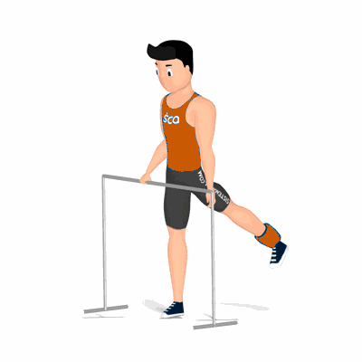

Glúteo com Caneleira

Exercício para hipertrofia e fortalecimento dos glúteos, trabalhando glúteo máximos, médio e mínimo.
Ficha Técnica
Tipo: Musculação
Grupo Muscular: Glúteo
Aparelho: Nenhum
Músculos: Nenhum
Como realizar
- Com caneleira(s) em uma das pernas;
- Apoiar as mãos em um espaldar para proporcionar equilíbrio extra para execução dos movimentos;
- Com a coluna alinhada, estenda a perna a qual estiver com a caneleira e eleve-a o mais alto que conseguir para trás;
- Concentre no músculo trabalhado, retorne à posição inicial lentamente;
- Troque a caneleira de perna e repita os movimentos.
 RC STORE
RC STORE